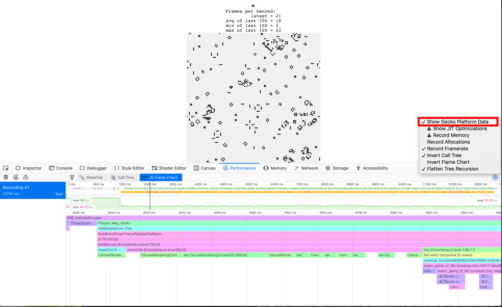

시간 프로파일링
이 장에서는 Game of Life 구현의 성능을 향상시킬 것입니다. 우리는 시간 프로파일링을 사용하여 우리의 노력을 안내할 것입니다.
계속하기 전에 Rust 및 WebAssembly 코드를 프로파일링하는 데 사용 가능한 도구를 숙지하십시오.
window.performance.now 함수로 초당 프레임 수 타이머 만들기
이 FPS 타이머는 Game of Life의 렌더링 속도를 높이는 데 도움이 될 것입니다.
먼저 wasm-game-of-life/www/index.js에 fps 객체를 추가합니다.
const fps = new class {
constructor() {
this.fps = document.getElementById("fps");
this.frames = [];
this.lastFrameTimeStamp = performance.now();
}
render() {
// 마지막 프레임 렌더링 이후의 초당 프레임 수 변화량을 변환
const now = performance.now();
const delta = now - this.lastFrameTimeStamp;
this.lastFrameTimeStamp = now;
const fps = 1 / delta * 1000;
// 최근 100개의 타이밍만 저장합니다.
this.frames.push(fps);
if (this.frames.length > 100) {
this.frames.shift();
}
// 100개의 최신 타이밍의 최대, 최소, 평균을 찾습니다.
let min = Infinity;
let max = -Infinity;
let sum = 0;
for (let i = 0; i < this.frames.length; i++) {
sum += this.frames[i];
min = Math.min(this.frames[i], min);
max = Math.max(this.frames[i], max);
}
let mean = sum / this.frames.length;
// 통계를 렌더링합니다.
this.fps.textContent = `
Frames per Second:
latest = ${Math.round(fps)}
avg of last 100 = ${Math.round(mean)}
min of last 100 = ${Math.round(min)}
max of last 100 = ${Math.round(max)}
`.trim();
}
};
다음으로 renderLoop의 각 반복에서 fps render 함수를 호출합니다.
const renderLoop = () => {
fps.render(); //new
universe.tick();
drawGrid();
drawCells();
animationId = requestAnimationFrame(renderLoop);
};
마지막으로 <canvas> 바로 위의 wasm-game-of-life/www/index.html에 fps 요소를 추가하는 것을 잊지 마십시오.
<div id="fps"></div>
그리고 CSS를 추가하여 서식을 멋지게 만드세요.
#fps {
white-space: pre;
font-family: monospace;
}
그리고 짜잔! http://localhost:8080 새로고침하면 FPS 카운터가 생깁니다!
Universe::tick, console.time, console.timeEnd로 시간 측정
Universe::tick의 각 호출에 걸리는 시간을 측정하기 위해 web-sys 크레이트를 통해 console.time 및 console.timeEnd를 사용할 수 있습니다.
먼저 wasm-game-of-life/Cargo.toml에 대한 종속성으로 web-sys를 추가합니다.
[dependencies.web-sys]
version = "0.3"
features = [
"console",
]
모든 console.time 호출에는 해당하는 console.timeEnd 호출이 있어야 하므로 둘 다 RAII 유형으로 래핑하는 것이 편리합니다.
#![allow(unused)] fn main() { extern crate web_sys; use web_sys::console; pub struct Timer<'a> { name: &'a str, } impl<'a> Timer<'a> { pub fn new(name: &'a str) -> Timer<'a> { console::time_with_label(name); Timer { name } } } impl<'a> Drop for Timer<'a> { fn drop(&mut self) { console::time_end_with_label(self.name); } } }
그런 다음 메소드 상단에 이 스니펫을 추가하여 각 Universe::tick에 걸리는 시간을 측정할 수 있습니다.
#![allow(unused)] fn main() { let _timer = Timer::new("Universe::tick"); }
Universe::tick에 대한 각 호출에 걸린 시간이 이제 콘솔에 기록됩니다.

또한 console.time 및 console.timeEnd 쌍이 브라우저 프로파일러의 "timeline" 또는 "waterfall" 보기에 표시됩니다.

세포게임 세계의 성장
⚠️ 이 섹션은 Firefox의 예시 스크린샷을 활용합니다. 모든 최신 브라우저에는 유사한 도구가 있지만 다른 개발자 도구로 작업하는 데 약간의 뉘앙스 차이가 있을 수 있습니다. 추출한 프로필 정보는 기본적으로 동일하지만 표시되는 보기와 다른 도구의 이름에 따라 차이가 있을 수 있습니다.
Game of Life 세계를 더 크게 만들면 어떻게 됩니까? 64 x 64 유니버스를 128 x 128 유니버스로 교체하면(wasm-game-of-life/src/lib.rs에서 Universe::new 수정) FPS가 부드러운 60에서 고르지 못한 40으로 떨어집니다. - 내 컴퓨터에서.
프로필을 기록하고 waterfall view를 보면 각 애니메이션 프레임이 20밀리초 이상 걸리는 것을 알 수 있습니다. 초당 60프레임은 프레임을 렌더링하는 전체 프로세스에 16밀리초를 남겨둡니다. 이는 JavaScript 및 WebAssembly뿐만 아니라 페인팅과 같이 브라우저가 수행하는 다른 모든 작업도 포함합니다.

단일 애니메이션 프레임 내에서 일어나는 일을 보면 CanvasRenderingContext2D.fillStyle setter는 매우 고비용입니다!
⚠️ Firefox에서 위에서 언급한
CanvasRenderingContext2D.fillStyle대신 단순히 "DOM"이라고 표시된 줄이 보이면 성능 개발자 도구 옵션에서 "게코 플랫폼 데이터 표시" 옵션을 켜야 할 수도 있습니다. 

그리고 호출 트리의 많은 프레임 집계를 보면 이것이 이상이 아님을 확인할 수 있습니다.

거의 40%의 시간을 이 세터에서 보냅니다!
⚡ 우리는
tick메서드에서 성능 병목 현상이 발생할 것으로 예상했지만 그렇지 않았습니다. 예상하지 못한 곳에서 시간을 보낼 수 있으므로 항상 프로파일링을 통해 초점을 맞추십시오.
wasm-game-of-life/www/index.js의 drawCells 함수에서 fillStyle 속성은 모든 애니메이션 프레임에서 유니버스의 모든 셀에 대해 한 번 설정됩니다.
for (let row = 0; row < height; row++) {
for (let col = 0; col < width; col++) {
const idx = getIndex(row, col);
ctx.fillStyle = cells[idx] === DEAD
? DEAD_COLOR
: ALIVE_COLOR;
ctx.fillRect(
col * (CELL_SIZE + 1) + 1,
row * (CELL_SIZE + 1) + 1,
CELL_SIZE,
CELL_SIZE
);
}
}
이제 'fillStyle'을 설정하는 것이 너무 비싸다는 것을 알았으므로 너무 자주 설정하지 않으려면 어떻게 해야 할까요? 셀이 살아있는지 죽었는지에 따라 fillStyle을 변경해야 합니다. 'fillStyle = ALIVE_COLOR'를 설정한 다음 한 패스에서 모든 살아있는 세포를 그린 다음 fillStyle = DEAD_COLOR를 설정하고 다른 패스에서 모든 죽은 세포를 그리면 fillStyle 설정을 매회 한 번이 아니라 두 번만 종료합니다.
// Alive cells.
ctx.fillStyle = ALIVE_COLOR;
for (let row = 0; row < height; row++) {
for (let col = 0; col < width; col++) {
const idx = getIndex(row, col);
if (cells[idx] !== Cell.Alive) {
continue;
}
ctx.fillRect(
col * (CELL_SIZE + 1) + 1,
row * (CELL_SIZE + 1) + 1,
CELL_SIZE,
CELL_SIZE
);
}
}
// Dead cells.
ctx.fillStyle = DEAD_COLOR;
for (let row = 0; row < height; row++) {
for (let col = 0; col < width; col++) {
const idx = getIndex(row, col);
if (cells[idx] !== Cell.Dead) {
continue;
}
ctx.fillRect(
col * (CELL_SIZE + 1) + 1,
row * (CELL_SIZE + 1) + 1,
CELL_SIZE,
CELL_SIZE
);
}
}
이러한 변경 사항을 저장하고 http://localhost:8080/을 새로 고치면 렌더링이 초당 60프레임으로 부드럽게 돌아갑니다.
다른 프로필을 보면 현재 각 애니메이션 프레임에 약 10밀리초만 소비되고 있음을 알 수 있습니다.

단일 프레임을 분해하면 fillStyle 비용이 사라지고 프레임 시간의 대부분이 fillRect 내에서 소비되어 각 셀의 직사각형을 그리는 것을 볼 수 있습니다.
{kind=link}
시간을 더 빠르게 하기
어떤 사람들은 기다리는 것을 좋아하지 않으며 애니메이션 프레임당 우주의 한 틱이 발생하는 대신 9개의 틱이 발생하는 것을 선호합니다. 우리는 wasm-game-of-life/www/index.js에서 renderLoop 함수를 수정하여 아주 쉽게 할 수 있습니다:
for (let i = 0; i < 9; i++) {
universe.tick();
}
내 컴퓨터에서 이것은 우리를 초당 35프레임으로 다시 떨어뜨립니다. 좋지 않다. 우리는 그 부드러운60을 원합니다!
이제 우리는 시간이 Universe::tick에서 소비되고 있다는 것을 알고 있으므로 console.time 및 console.timeEnd 호출에서 다양한 비트를 래핑하는 Timer를 추가하고 이것이 우리를 어디로 이끄는지 봅시다. 내 가설은 새로운 셀 벡터를 할당하고 모든 틱에서 이전 벡터를 해제하는 것은 비용이 많이 들고 시간 예산의 상당 부분을 차지한다는 것입니다.
#![allow(unused)] fn main() { pub fn tick(&mut self) { let _timer = Timer::new("Universe::tick"); let mut next = { let _timer = Timer::new("allocate next cells"); self.cells.clone() }; { let _timer = Timer::new("new generation"); for row in 0..self.height { for col in 0..self.width { let idx = self.get_index(row, col); let cell = self.cells[idx]; let live_neighbors = self.live_neighbor_count(row, col); let next_cell = match (cell, live_neighbors) { // Rule 1: Any live cell with fewer than two live neighbours // dies, as if caused by underpopulation. (Cell::Alive, x) if x < 2 => Cell::Dead, // Rule 2: Any live cell with two or three live neighbours // lives on to the next generation. (Cell::Alive, 2) | (Cell::Alive, 3) => Cell::Alive, // Rule 3: Any live cell with more than three live // neighbours dies, as if by overpopulation. (Cell::Alive, x) if x > 3 => Cell::Dead, // Rule 4: Any dead cell with exactly three live neighbours // becomes a live cell, as if by reproduction. (Cell::Dead, 3) => Cell::Alive, // All other cells remain in the same state. (otherwise, _) => otherwise, }; next[idx] = next_cell; } } } let _timer = Timer::new("free old cells"); self.cells = next; } }
타이밍을 보면 내 가설이 틀렸다는 것이 분명합니다. 대부분의 시간은 실제로 다음 세대 세포를 계산하는 데 사용됩니다. 모든 tick에서 벡터를 할당하고 해제하는 데 드는 비용은 놀랍게도 무시할 수 있는 수준인 것 같습니다. 프로파일링에 대한 우리의 노력을 항상 안내해야 하는 또 다른 알림입니다!
{kind=link}
다음 섹션에는 nightly 컴파일러가 필요합니다. 벤치마크에 사용할 테스트 기능 게이트 때문에 필요합니다. 우리가 설치할 또 다른 도구는 cargo benchcmp입니다. cargo bench에서 생성한 마이크로 벤치마크를 비교하기 위한 작은 유틸리티입니다.
WebAssembly와 동일한 작업을 수행하지만 더 성숙한 프로파일링 도구를 사용할 수 있는 네이티브 코드 #[bench]를 작성해 보겠습니다. 다음은 새로운 wasm-game-of-life/benchs/bench.rs입니다.
#![allow(unused)] #![feature(test)] fn main() { extern crate test; extern crate wasm_game_of_life; #[bench] fn universe_ticks(b: &mut test::Bencher) { let mut universe = wasm_game_of_life::Universe::new(); b.iter(|| { universe.tick(); }); } }
또한 모든 #[wasm_bindgen] 주석을 주석 처리해야 하며 Cargo.toml의 "cdylib" 비트를 주석 처리해야 합니다. 그렇지 않으면 기본 코드 빌드가 실패하고 링크 오류가 발생합니다.
모든 것이 준비되면 cargo bench | tee before.txt를 사용하여 벤치마크를 컴파일하고 실행합니다! | tee before.txt 부분은 cargo bench의 출력을 가져와 before.txt라는 파일에 넣습니다.
$ cargo bench | tee before.txt
Finished release [optimized + debuginfo] target(s) in 0.0 secs
Running target/release/deps/wasm_game_of_life-91574dfbe2b5a124
running 0 tests
test result: ok. 0 passed; 0 failed; 0 ignored; 0 measured; 0 filtered out
Running target/release/deps/bench-8474091a05cfa2d9
running 1 test
test universe_ticks ... bench: 664,421 ns/iter (+/- 51,926)
test result: ok. 0 passed; 0 failed; 0 ignored; 1 measured; 0 filtered out
이것은 또한 binary가 있는 위치를 알려주며 벤치마크를 다시 실행할 수 있지만 이번에는 운영 체제의 프로파일러에서 실행됩니다. 제 경우에는 Linux를 실행 중이므로 perf가 제가 사용할 프로파일러입니다.
$ perf record -g target/release/deps/bench-8474091a05cfa2d9 --bench
running 1 test
test universe_ticks ... bench: 635,061 ns/iter (+/- 38,764)
test result: ok. 0 passed; 0 failed; 0 ignored; 1 measured; 0 filtered out
[ perf record: Woken up 1 times to write data ]
[ perf record: Captured and wrote 0.178 MB perf.data (2349 samples) ]
perf report로 프로필을 로드하면 예상대로 우리의 모든 시간이 Universe::tick에서 소비되었음을 알 수 있습니다.

perf는 a를 누르면 함수 시간의 어떤 명령이 사용되는지 주석으로 표시합니다.
{kind=link}
이것은 이웃 셀의 값을 합산하는 데 시간의 26.67%, 이웃의 열 인덱스를 가져오는 데 시간의 23.41%, 이웃의 행 인덱스를 가져오는 데 시간의 또 다른 15.42%가 소비되었음을 알려줍니다. 이 상위 3개 가장 비싼 명령어 중 두 번째와 세 번째는 모두 값비싼 div 명령어입니다. 이 div는 Universe::live_neighbor_count에서 모듈로 인덱싱 로직을 구현합니다.
wasm-game-of-life/src/lib.rs 내부의 live_neighbor_count 정의를 상기하십시오.
#![allow(unused)] fn main() { fn live_neighbor_count(&self, row: u32, column: u32) -> u8 { let mut count = 0; for delta_row in [self.height - 1, 0, 1].iter().cloned() { for delta_col in [self.width - 1, 0, 1].iter().cloned() { if delta_row == 0 && delta_col == 0 { continue; } let neighbor_row = (row + delta_row) % self.height; let neighbor_col = (column + delta_col) % self.width; let idx = self.get_index(neighbor_row, neighbor_col); count += self.cells[idx] as u8; } } count } }
나머지 사용한 이유는 첫 번째 또는 마지막 행 또는 열 가장자리 경우에 대해 'if' 분기로 코드를 복잡하게 만드는 것을 피하기 위해서였습니다. 그러나 row와 column이 모두 우주의 가장자리에 있지 않고 모듈로 래핑 처리가 필요하지 않은 가장 일반적인 경우에도 div 명령어 비용을 지불하고 있습니다. 대신에, 우리가 엣지 케이스에 대해 if를 사용하고 이 루프를 풀면, 분기는 CPU의 분기 예측기에 의해 매우 잘 예측되어야 합니다.
live_neighbor_count를 다음과 같이 다시 작성해 보겠습니다.
#![allow(unused)] fn main() { fn live_neighbor_count(&self, row: u32, column: u32) -> u8 { let mut count = 0; let north = if row == 0 { self.height - 1 } else { row - 1 }; let south = if row == self.height - 1 { 0 } else { row + 1 }; let west = if column == 0 { self.width - 1 } else { column - 1 }; let east = if column == self.width - 1 { 0 } else { column + 1 }; let nw = self.get_index(north, west); count += self.cells[nw] as u8; let n = self.get_index(north, column); count += self.cells[n] as u8; let ne = self.get_index(north, east); count += self.cells[ne] as u8; let w = self.get_index(row, west); count += self.cells[w] as u8; let e = self.get_index(row, east); count += self.cells[e] as u8; let sw = self.get_index(south, west); count += self.cells[sw] as u8; let s = self.get_index(south, column); count += self.cells[s] as u8; let se = self.get_index(south, east); count += self.cells[se] as u8; count } }
이제 다시 벤치마크를 실행해 보겠습니다! 이번에는 after.txt로 출력하겠습니다.
$ cargo bench | tee after.txt
Compiling wasm_game_of_life v0.1.0 (file:///home/fitzgen/wasm_game_of_life)
Finished release [optimized + debuginfo] target(s) in 0.82 secs
Running target/release/deps/wasm_game_of_life-91574dfbe2b5a124
running 0 tests
test result: ok. 0 passed; 0 failed; 0 ignored; 0 measured; 0 filtered out
Running target/release/deps/bench-8474091a05cfa2d9
running 1 test
test universe_ticks ... bench: 87,258 ns/iter (+/- 14,632)
test result: ok. 0 passed; 0 failed; 0 ignored; 1 measured; 0 filtered out
훨씬 좋아 보입니다! 우리는 benchcmp 도구와 이전에 만든 두 개의 텍스트 파일을 비교해 얼마나 더 나은지 알 수 있습니다.
$ cargo benchcmp before.txt after.txt
name before.txt ns/iter after.txt ns/iter diff ns/iter diff % speedup
universe_ticks 664,421 87,258 -577,163 -86.87% x 7.61
우와! 7.61배 속도 향상이 일어났습니다!
WebAssembly는 의도적으로 일반적인 하드웨어 아키텍처에 밀접하게 매핑되지만 이 기본 코드 속도 향상이 WebAssembly 속도 향상으로 변환되도록 해야 합니다.
wasm-pack build로 .wasm을 다시 빌드하고 http://localhost:8080/ 새로 고침합시다. 내 컴퓨터에서 페이지는 다시 초당 60프레임으로 실행되고 있으며 브라우저의 프로파일러로 다른 프로필을 기록하면 각 애니메이션 프레임에 약 10밀리초가 소요되는 것으로 나타났습니다.
성공!
{kind=link}
연습문제
- 이 시점에서 'Universe::tick' 속도를 높이기 위한 다음으로 가장 낮은 매달린 과일은 할당 및 해제를 제거하는 것입니다. 'Universe'가 두 벡터를 유지하고, 그 중 어느 것도 해제하지 않으며, 'tick'에 새 버퍼를 할당하지 않는 셀의 이중 버퍼링을 구현합니다.
- Rust 코드가 상태를 JavaScript로 변경한 셀 목록을 반환하는 "Implementing Life" 장의 대체 델타 기반 디자인을 구현합니다. 이렇게 하면
<canvas>로의 렌더링이 더 빨라집니까? 매 tick마다 새로운 변화 목록을 할당하지 않고 이 디자인을 구현할 수 있습니까?
- 프로파일링에서 알 수 있듯이 2D
<canvas>렌더링은 특별히 빠르지 않습니다. 2D 캔버스 렌더러를 WebGL 렌더러로 교체합니다. WebGL 버전이 얼마나 빠릅니까? WebGL 렌더링이 병목 현상이 되기 전에 우주를 얼마나 크게 만들 수 있습니까?